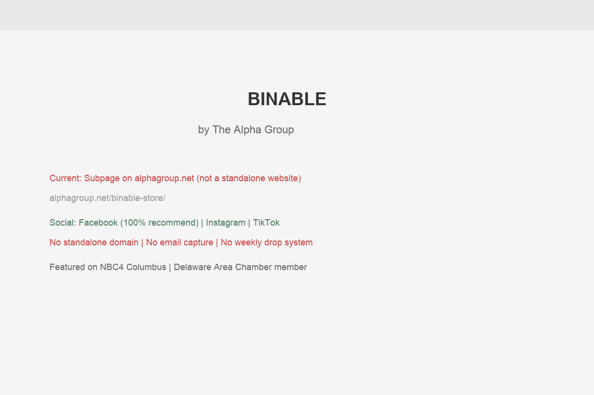

BINABLE isn't just a discount bin store. It's a mission-driven retail operation run by The Alpha Group, a 501(c)(3) nonprofit that has been serving individuals with developmental disabilities across Central Ohio since 1970 — that's over 55 years of impact. The Alpha Group serves more than 500 individuals throughout 11 counties, providing workforce development, supportive living, transportation, and integrated adult day services. BINABLE is the newest and most public-facing expression of that mission.
The concept is clever and compelling: overstock and returned items from major retailers are placed in bins and priced on a declining scale throughout the week. Fridays start at $12, and prices drop daily until Thursday when everything is just $1. Shop early for the best selection, shop late for the deepest discounts. It's a treasure-hunting experience that's become addictive for bargain shoppers across Central Ohio — and every dollar spent directly supports employment opportunities for adults with disabilities.
The store has already proven its concept. Originally located at 1000 Alpha Drive, BINABLE outgrew its space within the first year and relocated in January 2026 to a much larger location at 1141 Columbus Pike — the former American Freight building. The grand re-opening was featured on NBC4 Columbus, both on their news broadcast and on Daytime Columbus, bringing significant media attention to the mission. CEO Liz Owens-Detillion has been vocal about the strategic vision: increased visibility, more employment opportunities, and a bigger impact.
The team behind the store is dedicated. Store Manager Jessica Crist and Assistant Manager Zach Sparks lead a workforce that includes Alpha Group members who are developing real-world retail skills — stocking bins, operating the checkout, assisting customers, and building the confidence that comes from gainful employment. As one employee, Ella G., shared: "As someone who has never had a job before, it has opened my eyes with how to work and converse with others, since socialization is something that I struggle with."
BINABLE's pricing model is one of the most compelling aspects of the business — but it requires explanation for first-time visitors. Here's the weekly cycle:
In addition to the bins, BINABLE also operates a "Bargain Boutique" section with specially marked items at significant discounts from retail. These items have fixed prices and the Bargain Boutique items can be returned within 14 days with receipt — bin purchases are final sale. The store also has an inspection counter where staff will open and test items before purchase, ensuring customer satisfaction.
This pricing model creates natural urgency, repeat visits, and a game-like shopping experience that keeps customers coming back week after week. It's also inherently social — people love sharing their $1 Thursday finds on social media.
Here's what makes BINABLE fundamentally different from every other bin store in Ohio: your purchases directly fund meaningful employment for people with disabilities. That's not a marketing angle — it's the entire reason the store exists. The Alpha Group didn't open BINABLE to compete in discount retail for profit. They opened it to create jobs. The bargains are a vehicle for impact.
This mission-driven angle is an enormous competitive advantage that most bin stores simply cannot match. When a customer has the choice between BINABLE and a for-profit bin store with identical products, the social impact story tips the scale. But right now, most potential customers don't know that story exists — because BINABLE doesn't have its own website to tell it.
BINABLE's January 2026 move to 1141 Columbus Pike — the former American Freight building — was a pivotal moment. The new location on a major commercial corridor offers dramatically better visibility, more square footage for bins and inventory, improved parking, and a storefront that's visible to the thousands of cars that pass daily on US-23/Columbus Pike. This is the busiest commercial corridor in Delaware.
That physical visibility creates a natural digital marketing moment. People driving by see the BINABLE sign and Google it from their car. They need to find a compelling, informative website — not a nonprofit subpage. A standalone site capitalizes on the new location's drive-by traffic by converting curiosity into first visits.
The relocation also signals growth and momentum. For press, partners, and corporate sponsors, a business that outgrew its first location within a year and upgraded to a prime commercial space is a success story worth investing in. A professional website tells that story in a way that a subpage on alphagroup.net simply can't.
The timing is ideal. BINABLE has fresh momentum from the move, NBC4 coverage, and growing social engagement. A website launched now rides that wave rather than trying to create momentum from scratch. Every month without a standalone site is a month of that momentum dissipating instead of compounding.

Captured March 29, 2026
BINABLE doesn't have its own website. What exists today is a single subpage on alphagroup.net (the parent nonprofit's website) plus a handful of directory and social listings. Let's grade each component honestly:
The page at alphagroup.net/binable-store/ is a good informational page. But it has structural limitations that hold BINABLE back as a retail brand:
The bin store trend has exploded across Ohio and nationwide. Here's how BINABLE compares to competitors fighting for the same bargain-hunting audience in the Columbus metro area:
The social proof already exists. BINABLE's Facebook page has a 100% recommendation rate. The "What Should We Do Today Columbus" Instagram account featured the store and drove significant interest. A local Facebook group discussion about bargain stores in Delaware included multiple positive mentions of BINABLE, with shoppers sharing tips about the best days to visit and what kinds of items to expect.
This organic word-of-mouth is incredibly valuable — and incredibly fragile. Without a website to capture and amplify these conversations, the buzz remains scattered across social platforms with no way to consolidate it, measure it, or build on it systematically. A website with a review/testimonial section, social media feed integration, and a "Share Your Finds" gallery would turn scattered positive sentiment into a permanent, growing asset.
The discount bin store concept has exploded across the Columbus metro area in the past two years. What started as a niche liquidation model has become a mainstream shopping trend, driven largely by social media. Here's the competitive landscape you're operating in:
Where Ya Bin in Dublin has a professional website with a clear pricing schedule, daily hours, and location information. But here's the thing: they have a 2.1-star rating on Yelp with 26 reviews — meaning their customer experience has serious problems. BINABLE has a 100% recommendation rate. That's a massive advantage, but only if people can discover you and compare.
Bin Mania has invested heavily in multi-channel marketing — website, email, SMS, and social. They understand that bin store customers are repeat visitors who want to know what's new each week. Their digital infrastructure is designed to bring people back week after week.
Here's what's remarkable about your position: BINABLE is the only bin store in Central Ohio with a genuine social mission. Every competitor is a for-profit liquidation operation. You're the only one where shopping actually makes a difference in someone's life. That story — told well on a standalone website — is an emotional hook that no competitor can replicate. It turns casual shoppers into loyal advocates.
Bin stores have become a bona fide shopping trend. The treasure-hunt retail model — driven by TikTok videos and word-of-mouth — is generating significant search demand. Here are the terms that matter for BINABLE:
There's an important distinction in search marketing between branded searches (people who already know your name) and non-branded searches (people looking for what you offer but who haven't heard of you yet).
Right now, BINABLE has growing branded awareness — people see the name on social media, on NBC4, or hear it from friends. But when they Google "BINABLE," they land on a nonprofit website subpage that doesn't fully serve their needs as a shopper. That's a conversion leak.
For non-branded searches — "bin store near me," "discount shopping Delaware Ohio," "Amazon returns store Central Ohio" — BINABLE has zero visibility. A standalone website would capture both: converting the people who already know about you AND introducing you to the people who don't.
For bin stores specifically, TikTok and Instagram have replaced Google as the primary discovery channel for younger shoppers. People search "bin store haul Ohio" or "BINABLE finds" on TikTok before they ever Google anything. BINABLE already has TikTok and Instagram accounts — but without a website to link to, that social traffic has nowhere to land. No email capture, no weekly schedule, no "share with a friend" mechanism.
The content that performs best for bin stores on social media is exactly what BINABLE's experience provides: the thrill of the dig, the surprise of finding a name-brand item for $3, the before-and-after reveal of a haul. User-generated content from customers — filming their finds — is free marketing that drives massive foot traffic. But all of that traffic needs somewhere to go between visits.
The way people discover local retail is evolving fast. Here's what's changing and what it means for BINABLE:
For experiential retail like bin stores, TikTok is the new Google. A 2025 study found that 40% of Gen Z prefers TikTok and Instagram over Google for local business discovery. Bin store haul videos regularly get hundreds of thousands of views. This is BINABLE's natural environment — the treasure-hunt format is inherently visual and shareable. But social platforms are rented space. Algorithms change. Accounts get suspended. A website is the owned asset that gives all that social activity a permanent, controllable home.
When someone asks ChatGPT or Google's AI "What are fun things to do in Delaware, Ohio?" or "Where can I find discount shopping near Columbus?", the answer is assembled from structured web data. BINABLE is already listed on Destination Delaware County's tourism site — that's a signal. But without a dedicated website with LocalBusiness schema markup, hours, location data, and rich descriptions, AI tools will reference BINABLE inconsistently or not at all.
Google's quality framework (Experience, Expertise, Authoritativeness, Trustworthiness) increasingly rewards businesses with genuine community impact. A 501(c)(3) nonprofit operating a retail store with NBC4 coverage, chamber memberships, and a 55-year track record of serving people with disabilities? That's the definition of trustworthy. The Alpha Group's .net domain already has some authority — but a standalone BINABLE site with proper schema and backlinks from NBC4, the chamber, and the tourism board would build its own powerful authority quickly.
Here's a concrete example of what a standalone website would enable. Right now, if you search "things to do in Delaware Ohio," BINABLE might appear via the Destination Delaware County listing — but the click goes to visitdelohio.com, not to your page. If you search "bin store Delaware Ohio," the top results are the Alpha Group subpage and the chamber listing. Neither gives the searcher a complete, engaging experience of what BINABLE is.
A standalone BINABLE website would rank for all of these terms independently. It would own the search result with a proper title, meta description, and rich snippet. A searcher would see "BINABLE — Delaware's Mission-Driven Bin Store | New Bins Every Friday" instead of "BINABLE Store - The Alpha Group." That difference in how the search result looks directly impacts click-through rates.
Google also favors websites with fresh content. A site that updates weekly (new inventory posts, featured finds, event announcements) signals to Google that it's active and relevant — boosting rankings over time. The Alpha Group subpage hasn't been meaningfully updated since the relocation announcement.
BINABLE has unique needs compared to a typical local business — the website needs to function as a weekly destination, a mission storytelling platform, and a lead capture machine all at once. Here's the plan:
Build a vibrant, mobile-first website on its own domain that captures the energy of the in-store experience. Homepage with this week's pricing countdown, a "How It Works" visual guide for first-timers, the mission story front and center, store hours and location with map, and a gallery of finds. Fast, fun, and designed to convert scrollers into shoppers.
Implement a "Get Notified When New Bins Drop" signup that collects email and phone number. Send a weekly Friday notification when new inventory arrives. This is the single most effective tool for driving repeat visits — and it creates an owned audience that doesn't depend on any social platform's algorithm.
Fully optimize the GBP with professional photos of the store and bins, complete business categories, weekly Google Posts announcing new drops, and a Q&A section covering common questions. Set up event posts for special sales. This puts BINABLE in the local map pack for "bin store near me" and "discount store Delaware OH."
Create a dedicated "Our Story" section that tells the Alpha Group's 55-year history, shows the faces of BINABLE employees, shares impact metrics, and explains how every purchase creates opportunity. Include video embeds from the NBC4 features. This page becomes the go-to resource for press, corporate partners, schools planning group visits, and values-driven shoppers.
Integrate a "Best Finds" gallery fed by customer-submitted photos and social posts. Create a branded hashtag (#BINABLEfinds) and feature the best submissions on the website. This creates a virtuous cycle: customers share their hauls on social, the best ones get featured on the website, which drives more sharing. Free, authentic marketing powered by your own community.
We want to address a natural question: "We already have a page on alphagroup.net — why build a separate site?" Three reasons:
We know retail operations are busy — especially when you're managing inventory drops, a team, and a store that's open seven days a week. Our process is designed to be efficient and respectful of your time:
We designed this process to require minimal time from your team. Here's the full list:
Total time commitment from the BINABLE team: under 3 hours across the entire engagement.
A website is just the hub. Here's the full ecosystem that would turn BINABLE from a local secret into a regional destination:
Fully optimized with professional store photos, weekly Google Posts for new drops, complete categories, Q&A management, and event posts for special sales. Put BINABLE in the map pack for every "bin store" and "discount store" search in the Columbus metro.
Email and SMS notifications every Friday morning: "New bins just dropped at BINABLE." Include a teaser of categories (electronics, home goods, toys) to build excitement. This single feature could drive 20-30% more foot traffic on Fridays.
Short-form videos are BINABLE's superpower. Bin reveal videos, employee spotlights, customer haul reactions, and "will it work?" product tests. TikTok and Instagram Reels with a consistent posting schedule turn casual followers into weekly shoppers.
The Alpha Group story is your competitive moat. Monthly impact updates — "This month, BINABLE created 120 hours of employment for team members with disabilities" — give shoppers a reason to choose you over every for-profit competitor, every time.
Host "BINABLE After Hours" preview events for email subscribers, partner with local schools for field trips, organize seasonal charity drives. Each event generates press, social content, and deepens community loyalty. The new larger space makes this possible.
A professional website with impact metrics makes it easy to approach corporate sponsors. Companies looking for community impact partnerships — especially around disability employment — need a polished digital presentation to share with their leadership teams.
Bin stores operate on volume — lots of transactions at lower price points. The math is straightforward: more foot traffic equals more revenue. Let's look at what a dedicated digital presence could mean for BINABLE:
The biggest revenue lever for a bin store isn't attracting brand-new customers — it's getting existing customers to come back more often. A weekly "New Bins Dropped" notification to an email/SMS list converts at dramatically higher rates than any other marketing channel. Industry data suggests that email marketing generates $36 for every $1 spent — and for a weekly-inventory business like BINABLE, the ROI is even higher because the urgency is built in.
Conservatively, if a standalone website with email capture builds a subscriber list of 1,000 locals within the first 6 months (very achievable given your foot traffic and social following), and even 15% of those subscribers make an additional visit per month they otherwise wouldn't have, that's 150 extra visits per month at an average of $20-$25 per visit.
More revenue for BINABLE means more employment hours for Alpha Group members. It means the store can hire additional team members with disabilities. It means the Alpha Group's mission reaches further. A professional website doesn't just grow a retail business — it amplifies the impact of a 55-year-old nonprofit serving some of the most underserved members of the community.
And there's a fundraising angle too. A polished BINABLE website with impact metrics, employee stories, and the NBC4 coverage prominently featured becomes a powerful tool for the Alpha Group's development team. Corporate donors and grant-makers want to see tangible, community-facing programs — and BINABLE is exactly that.
BINABLE's impact extends far beyond the store walls. Consider the ripple effects of a thriving, digitally-visible BINABLE:
Aspire Digital works with local businesses that are great at what they do but haven't had the time or resources to build the digital presence they deserve. BINABLE is a perfect example: the in-store experience is excellent, the mission is powerful, the community response has been overwhelming — and the digital infrastructure hasn't caught up yet.
What drew us to BINABLE isn't just the retail concept — it's the purpose behind it. We've built sites for trades businesses, salons, and restaurants. But a mission-driven retail operation that creates employment for people with disabilities? That's the kind of project our team gets genuinely excited about. The story practically writes itself — it just needs a proper stage.
We'd approach a BINABLE website differently than a typical retail site. The design needs to be energetic and fun — matching the in-store energy of digging through bins and finding hidden gems. But it also needs moments of depth where the mission story shines through. The employee profiles. The Alpha Group's 55-year history. The NBC4 coverage. The impact numbers. All woven together so that a first-time visitor leaves thinking: "I need to go check this place out — and I feel good about spending my money there."
We also understand that BINABLE operates within a nonprofit structure, which means budget considerations matter. We'd work with the Alpha Group to find the right scope and investment level — we're not interested in selling you things you don't need.
A few things about how we work:
No pressure, no corporate pitch — just a conversation about building a digital presence that matches the energy and purpose of what you've already created.
Book a Free Strategy Callor email Chris directly
The bin store industry in Central Ohio is still young — which means the businesses that invest in digital infrastructure now will have a lasting first-mover advantage. BINABLE has something none of the for-profit competitors can manufacture: a genuine, 55-year-old mission that makes every purchase meaningful. That story, told on the right platform, is the kind of competitive moat that lasts.
Every week that passes without a standalone digital presence is a week of missed email signups, missed Google searches, and missed opportunities to convert social media followers into loyal weekly shoppers. The momentum from the new location, the NBC4 coverage, and the growing community buzz is real — it just needs a digital home to live in.